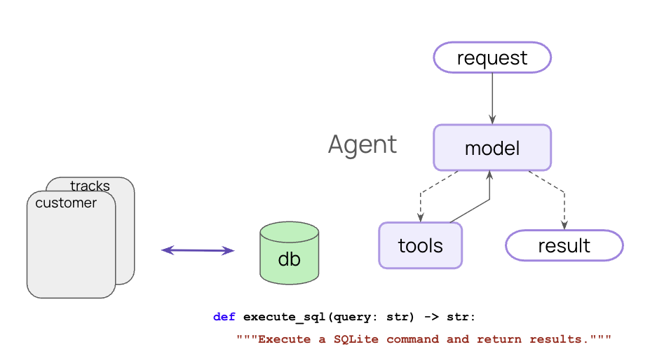
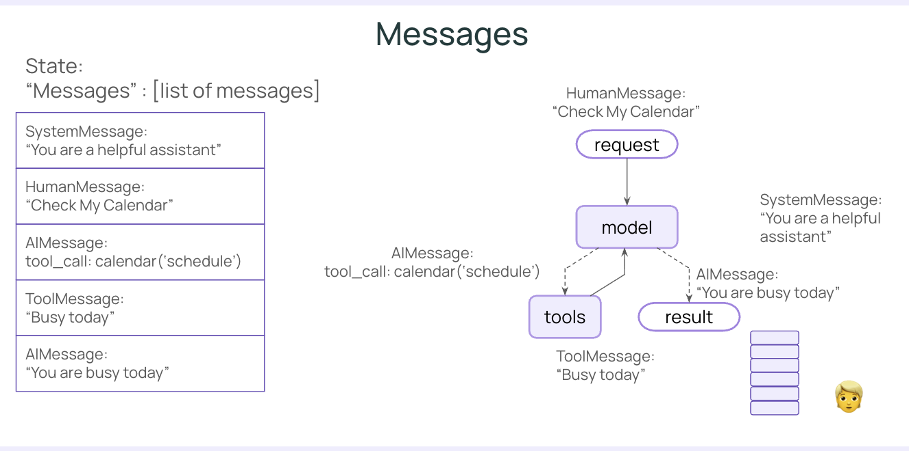
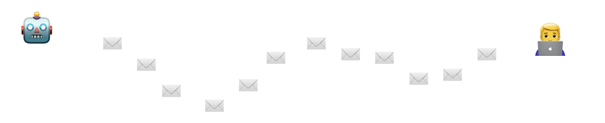
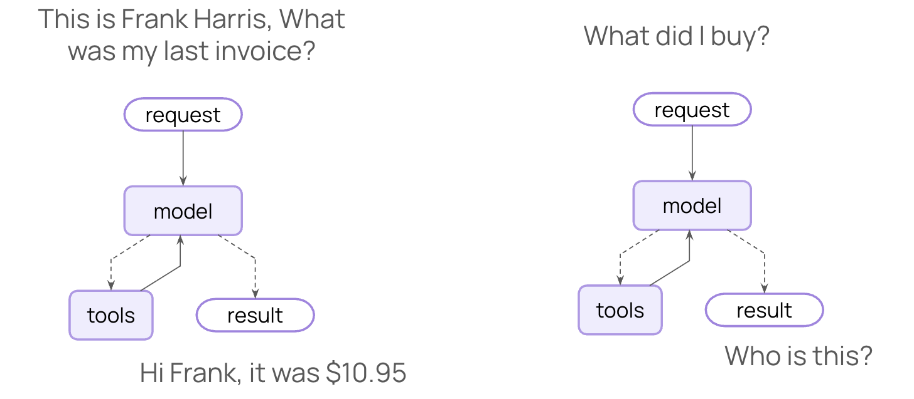
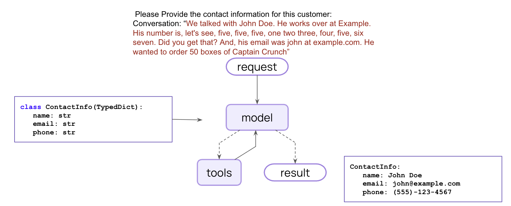
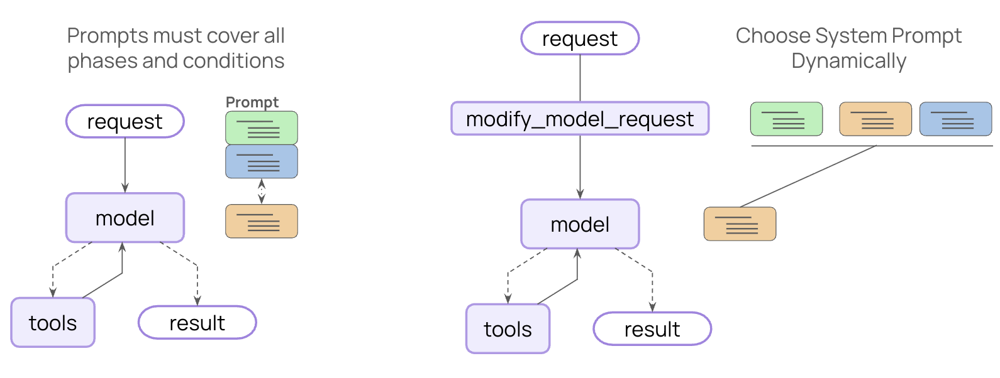
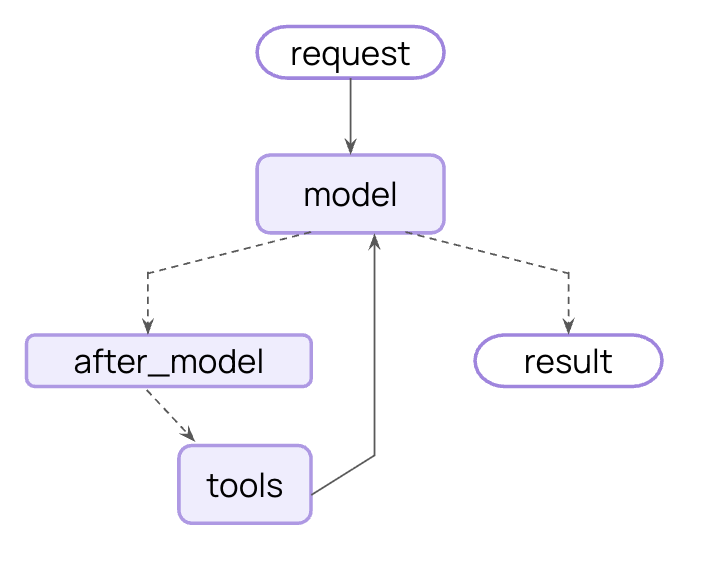

A comprehensive reference guide summarizing the core architectural concepts, ReAct flow, and Jupyter Notebook labs from the course.
| Lesson / Video | Notebook Reference | Core Concept Learned |
|---|---|---|
| 1. The Fast Agent | L1_FastAgent |
Building a basic ReAct loop agent that calls SQL tools and self-corrects errors. |
| 2. Models & Messages | L2_Models_And_Messages |
Standard message roles (System, Human, AI, Tool) and the persistent scratchpad. |
| 3. Streaming | L3_Streaming |
Emitting updates via values (step-by-step), messages (token-by-token), or custom streams. |
| 4. Tools | L4_Tools |
Wrapping Python functions with @tool and using docstrings to guide LLM behavior. |
| 5. Tools with MCP | L5_Tools_w_MCP |
Connecting to external, out-of-process tools using the Model Context Protocol. |
| 6. Memory | L6_Memory |
Injecting context dependencies and preserving conversation history via checkpointing. |
| 7. Structured Output | L7_StructuredOutput |
Forcing the LLM to output strict, validated JSON (Pydantic/TypedDict) instead of raw text. |
| 8. Dynamic Prompting | L8_Dynamic_Prompt |
Using middleware to dynamically alter system prompts on the fly based on runtime context. |
| 9. Human in the Loop | L9_HITL |
Pausing agent execution to require manual approval or edits before sensitive tool calls. |
The centerpiece of this course is the ReAct (Reasoning and Acting) Agent, built on top of LangGraph. This architecture synergizes reasoning and acting in language models through a continuous execution loop.
In LangGraph, the agent's memory is simply a continuously growing list of messages appended to a shared scratchpad. State: "Messages" : [list of messages]
SystemMessage: "You are a helpful assistant"HumanMessage: "Check my calendar"AIMessage: (tool_call: calendar('schedule'))ToolMessage: "Busy today"AIMessage: "You are busy today"Middleware allows you to insert specific code at key points in the ReAct loop to modify inputs, outputs, or behavior dynamically.
before_agent : Setup (files, connections)before_model : Summarization, guardrailswrap_model_call / wrap_tool_call : Dynamic prompts, retries, cachingafter_model : Output guardrails, Human-in-the-loop interruptsafter_agent : TeardownL1_FastAgent)Concept: A ReAct agent is built with create_agent. It acts as the orchestration engine connecting your user requests, a language model (for reasoning), and your database/tools (for acting and observing).

Chinook.db) without prior schema knowledge.L2_Models_And_Messages)Concept: Elements of the system communicate exclusively by appending message objects to a persistent State array.

SystemMessage, HumanMessage, AIMessage, and ToolMessage.L3_Streaming)Concept: Since agentic loops can be slow, streaming allows you to emit data token-by-token or step-by-step directly to the user to support highly interactive applications.

values: Emits state updates after every step.messages: Streams the LLM output token-by-token.custom: Allows emitting user-defined data streams from inside tools.L4_Tools)Concept: Tools provide the "Action" part of ReAct. The Reasoning Node uses the tool's python description to decide when and how to call the tool, and the result acts as the "Observation".
@tool decorator.parse_docstring=True explicitly parses Google-style docstrings into strict metadata schemas for the LLM.L5_Tools_w_MCP)Concept: You don't have to write all tools in Python. The Model Context Protocol allows the agent to reach out to an external server (e.g. running on Node.js) to execute tools.
MultiServerMCPClient to connect to a local npx server, loading external tools directly into the LangChain agent.L6_Memory)Concept: Without memory, the agent forgets previous messages (like "What did I buy?"). By utilizing a Checkpointer and a Thread ID, the agent gains long-term or session-based memory.

RuntimeContext is used to inject static dependencies (like DB connections) into tools.MemorySaver() (checkpointing) and passing a thread_id in the config.L7_StructuredOutput)Concept: Forcing the LLM to format its response as strict JSON so it can be parsed by subsequent computer systems (like extracting exact Name and Email strings).

response_format (like a Pydantic Model or a TypedDict), the agent outputs validated, structured data instead of raw text.L8_Dynamic_Prompt)Concept: Prompts must cover all phases and conditions of a task, but static prompts get too large. We can dynamically choose and inject the correct System Prompt at runtime using middleware.

L9_HITL)Concept: Some tool actions are too dangerous to run automatically. We can inject an interrupt hook into the loop to pause execution until a human reviews the action.

after_model.execute_sql.